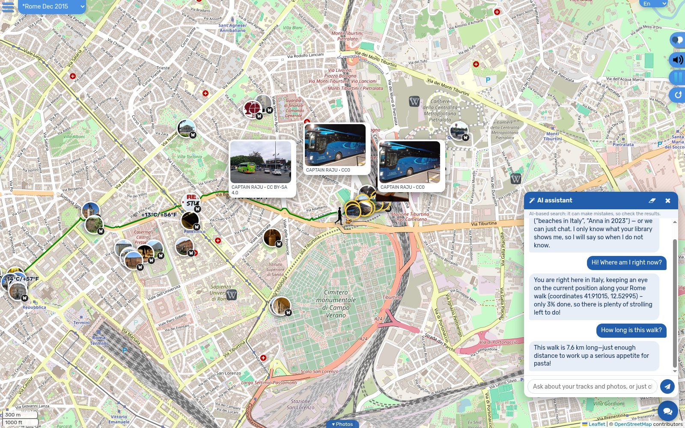
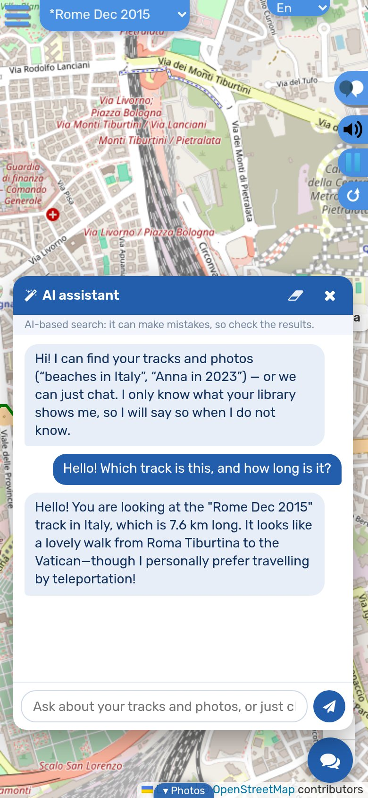
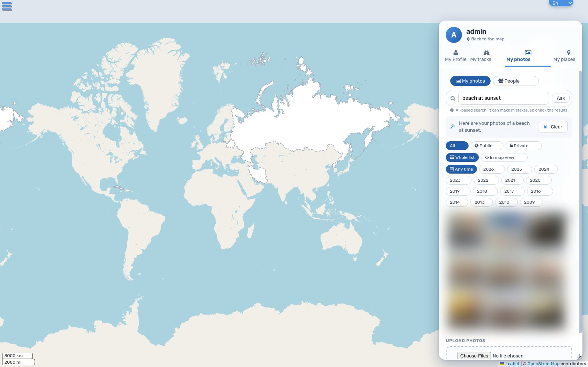
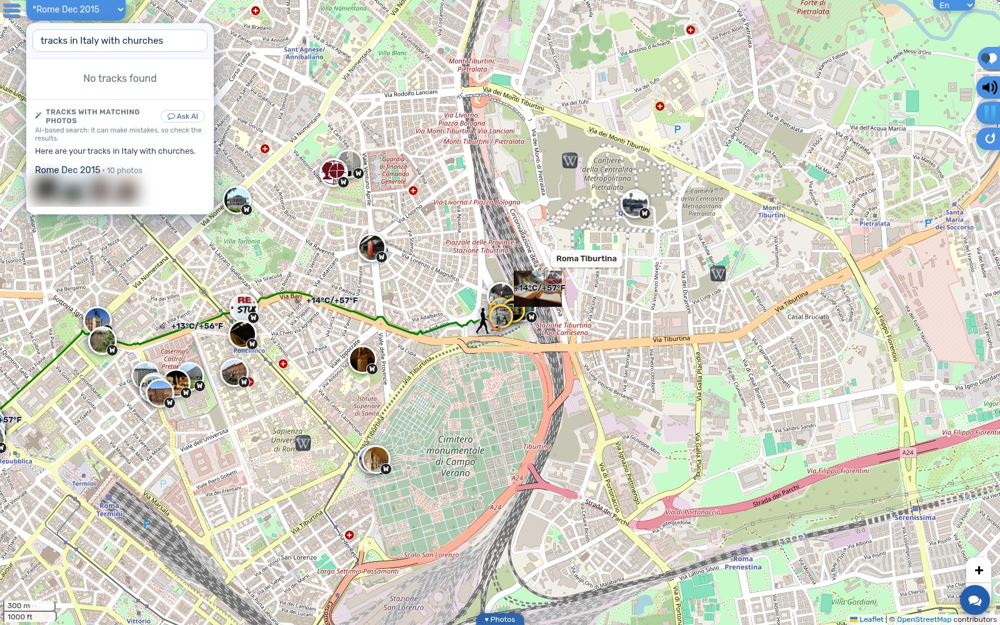
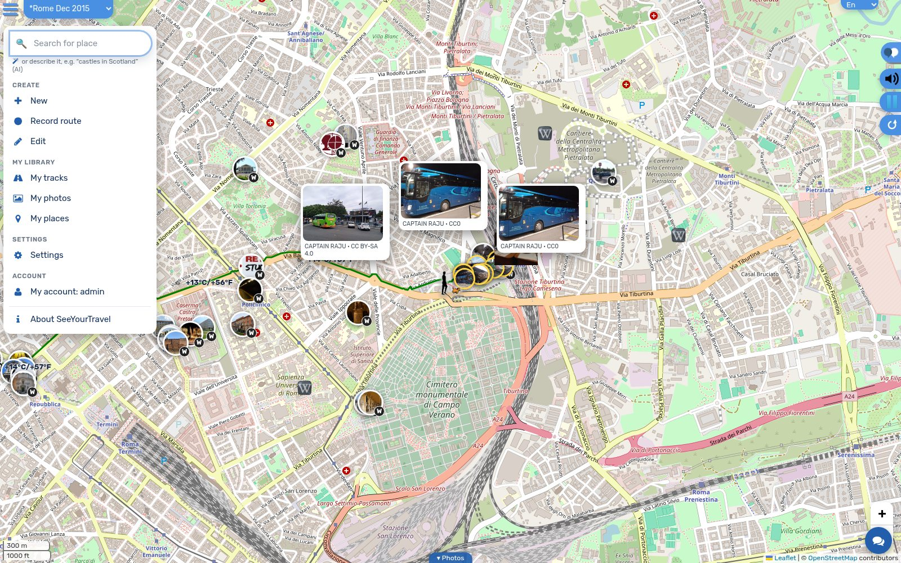
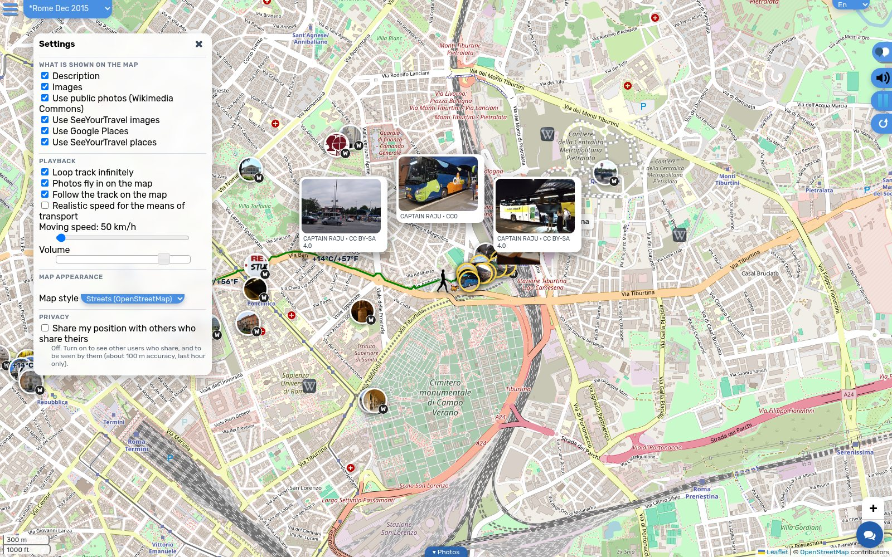
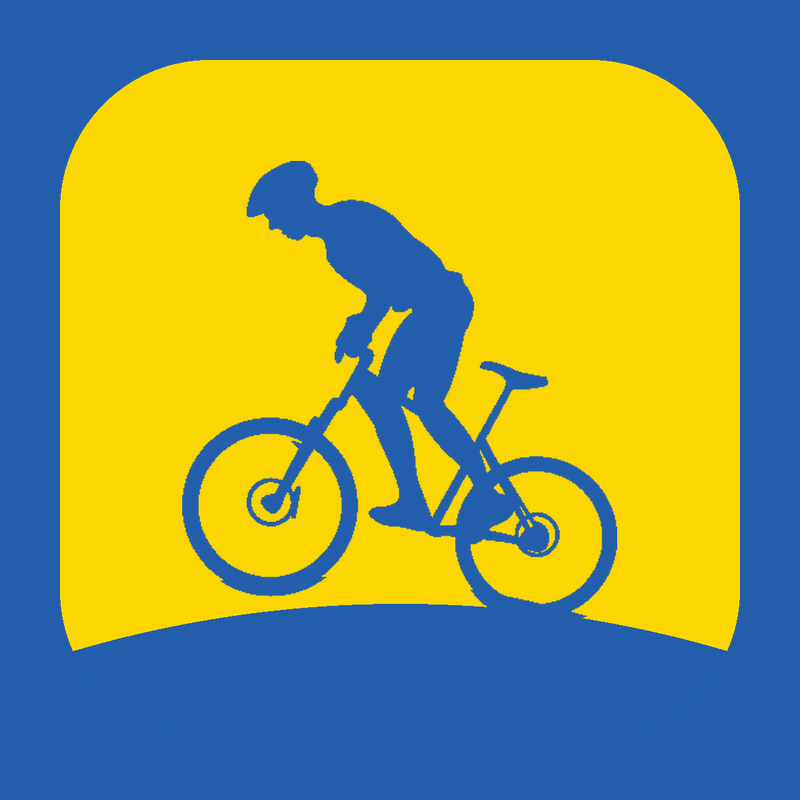
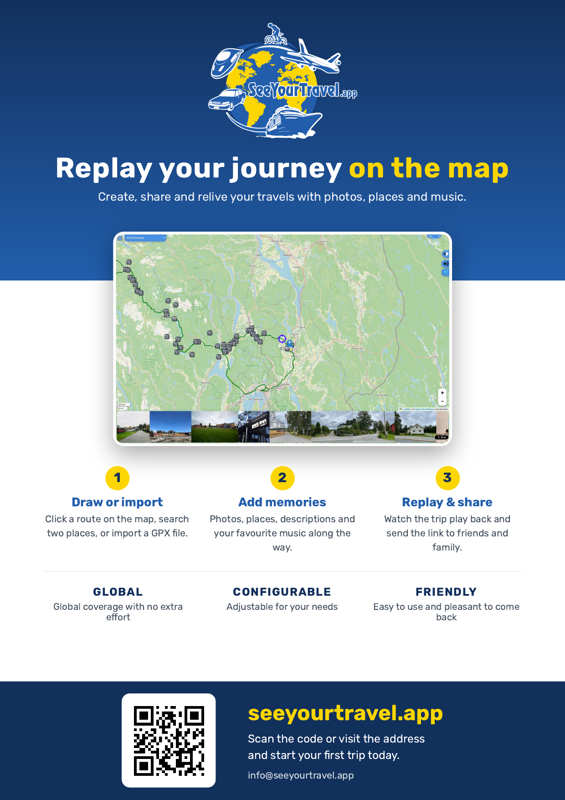

About
SeeYourTravel.app is a free web app for creating, sharing and replaying journeys on a map. Draw a route, search two places or import a GPX file, add photos, places, descriptions and music, then watch the trip play back and share the link with friends and family.
New: an AI travel assistant you can chat with, photo search by what pictures show (“beach at sunset”, in any language), and track search that finds routes passing the places where matching photos were taken. See what’s new.
It works worldwide, in English, German, Ukrainian and Hebrew, uses open map data (OpenStreetMap) and public photos from Wikimedia Commons, and runs in any modern browser.
One-liner: “Replay your journey on the map.” Contact: info@seeyourtravel.app
What’s new
Meet your AI travel companion: it knows the track, weather, places, elevation and photos on your screen, can find photos and tracks for you, moves the map where you ask, chats and jokes along the way — and says “I don’t know” instead of making things up.


AI assistantAsk about the track you are looking at: where you are, how far, how high, what is nearby. Answers come from what is on screen — not from guesswork.


On your phoneThe same assistant in your pocket, in English, German, Ukrainian or Hebrew.


Search by what photos showType “beach at sunset” in any language — combined with year, month, person and map filters. The picture search runs on the site’s own server.


Tracks where your photos areFind routes that pass the places where matching photos were taken, inside real country borders.


One clear menuCreate, My library, Settings, Account — the same on every page, with keyboard support.


Tidy settingsMap content, playback, map look and privacy, each in its own group.
- Faster with large libraries: tens of thousands of photos open in about a second instead of eight.
- Filter photos by year and month next to location and person; photos with people stay private by default.
- Ask in the map’s search box: “castles in Scotland” moves the map and lists matching tracks.
About the AI: AI-based features can make mistakes, so check the results. The assistant never receives your photos — only text: your question and a short summary of what is on screen. It is for signed-in users, has daily limits, and cannot change or delete anything. Screenshots show demo content; personal photos are blurred.
Logos
Download 2705×2099

Same file (outlined)
Download


Please keep clear space around the logo of about the height of the “S”, and don’t stretch, recolour or add effects.
Colours & font
#225EAC
#FCD600
#12305C
#FFFFFF
Typeface: Rubik (open source) — one font for Latin, Cyrillic and Hebrew.
Screenshots


Map data © OpenStreetMap contributors. Photos from Wikimedia Commons and the authors’ own.
Social & print


Profile picture 800×800



A4 flyer (PDF)